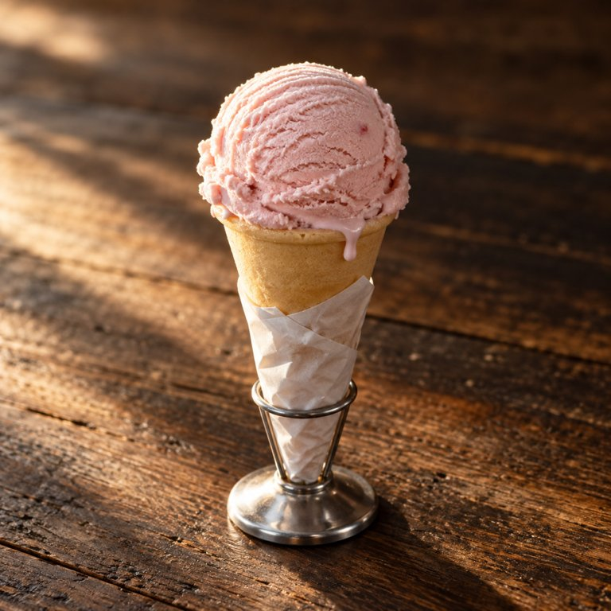

草莓甜筒

从柜台接过来，捏着筒底那圈纸。
- 包装
- 球比筒口大一圈，边上已经有一点化下来的亮。
- 看
- 球是粉的，浅的粉，挖球器留的弧面一道一道，里面嵌着一两点更深的红，是果肉。筒是光滑的浅黄，捏着就感觉是脆的。纸皱着，被手捏出褶。
- 闻
- 凉，不凑近闻不到草莓味。鼻子快贴上了才有一点。
- 入口头两秒
- 第一口是牙齿上的冰，先冻一下，牙一激灵。奶味先在舌面化开，然后是甜，再然后一点点草莓果肉，小小的一块，比冰淇淋软。
- 化的方式
- 含着从贴舌头那面化，奶的。头几口全是冰淇淋，还够不到筒。
- 几口下去
- 第四口够到筒口。筒是干脆的，咔的一声，有麦香，嚼两下就变成麦香的渣渣，混在草莓冰淇淋中间，香得更明显。第六口起化下来的顺着筒口往下淌，得转着圈舔，捏纸那儿开始粘手，纸湿了一块。筒口那圈内壁吸了化开的奶，软了，外壁还是脆的。冰淇淋软了，不冻牙了。
- 最后一口
- 最后一口是甜筒的小尖尖，脆的，里面那点冰淇淋已经没那么凉了。脆的一声，麦香的渣和一点点半化的奶。这是最好的收尾。
- 余味（大约 3 分钟散完）
- 0 分钟嘴里凉，奶味铺着，草莓在后面一点，牙缝里有筒的渣。手指上有点黏。1 分钟凉退了，奶味还在，甜淡了。2 分钟奶味散了，只剩一点麦香和嘴唇上的甜。